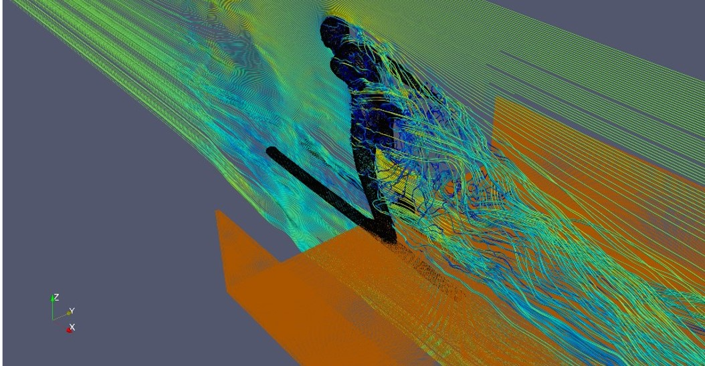

数値流体力学のデータ可視化図についての考察
可視化の背景
数値流体力学の分野で行われる数値シミュレーションは
定めた計算領域を格子で細分化し、その一つ一つの格子で支配方程式を解くことで
シミュレーションが進行していく。
結果として出て来るデータは数字の羅列であり、学会・論文等で発表する際には
可視化という作業が必要不可欠である。
行ったシミュレーション・結果を誤解されないために、分かりやすい可視化図を作ることが求められる
以下で可視化図の例をいくつか提示し、その特徴について述べる
可視化図の例


図１ 正中断面線での可視化

図2 三次元での流線図の可視化

図3 背面の渦度の可視化
それぞれの可視化図の説明、長所・短所
図1の正中断面線での可視化図は流れの中のGeometryの矢状面上に流速・圧力などの分布を投影する可視化法である
面にとりうる値のカラーマップに対応する色が投影されるため、視覚的に瞬時にみて分かりやすいという利点がある
一方、面上での可視化になるので二次元になってしまう。三次元で行われるシミュレーションで物理量の変化を捉える
には、この方法では不十分である。
図2の流線図の分布は、流体の一本一本の流線を可視化したものである。
図１の断面での可視化とは異なり、空間上で流体がどの様な挙動を示すかが分かりやすい。
また、三次元的であり、ビジュアル的に図1のものより優れているように思われる。
しかし、流線が多くなると少々図が煩雑になり、どこで流体が減速しているかなどが分かりにくくなる可能性がある。
図３の渦度の可視化は、物体に流体が当たり背面で流れが乱れる様子やカルマン渦といった特定の現象を観察するには優れている
しかし、使用できるのは特定の現象を示したいときのみであり汎用性は高くない
結論
可視化の際最も重要なのは目的であり、自分の主張したい事を最も裏付ける事ができる可視化をすることが重要であると気付いた
その為に様々な可視化法について引き出しを増やしておくことが重要である